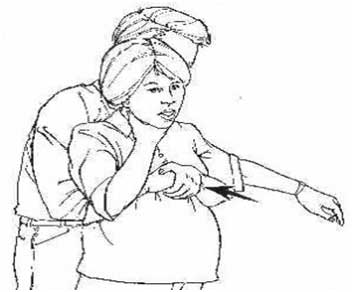

- Berdiri atau berlutut di belakang korban (pastikan tinggi tubuh Anda sesuai dengan tinggi tubuh korban, apabila korban masih anak2 atau bertubuh kecil dari Anda kemungkinan harus berlutut)
- Kepalkan salah satu tangan Anda.
- Letakkan kepalan tangan Anda dengan arah ibu jari menempel ke dinding perut korban, posisikan kepalan tangan anda 2 jari di atas pusat (pusat selalu sejajar dengan tulang pinggul atas), Anda tidak boleh memposisikan kepalan tangan Anda di ulu hati.
- Kencangkan kepalan tangan Anda dengan yang ssatunya sehingga kedua lengan anda melingkar di perut korban.
- Lakukan penekanan ke arah belakang dan atas sampai benda asing keluar atau si korban menjadi jatuh tidak sadar.
FAQ :
1. Bagaimana yang harus dilakukan jika yang tersedak adalah wanita hamil ?
Jika korban tersedak adalah wanita hamil atau orang dewasa yang terlalu gemuk (obesitas) kita bisa melakukan pilihan lain dengan melakukan “chest thrust” yaitu dengan meletakkan kepalan tangan Anda di tengah-tengah tulang dada

2. Tanda apa sajakah yang muncul jika kita telah berhasil melakukan pertolongan ?
- Anda melihat dada nya naik ketika memberikan bantuan napas
- Melihat benda asing keluar dari mulut korban.

 Tersedak
Tersedak